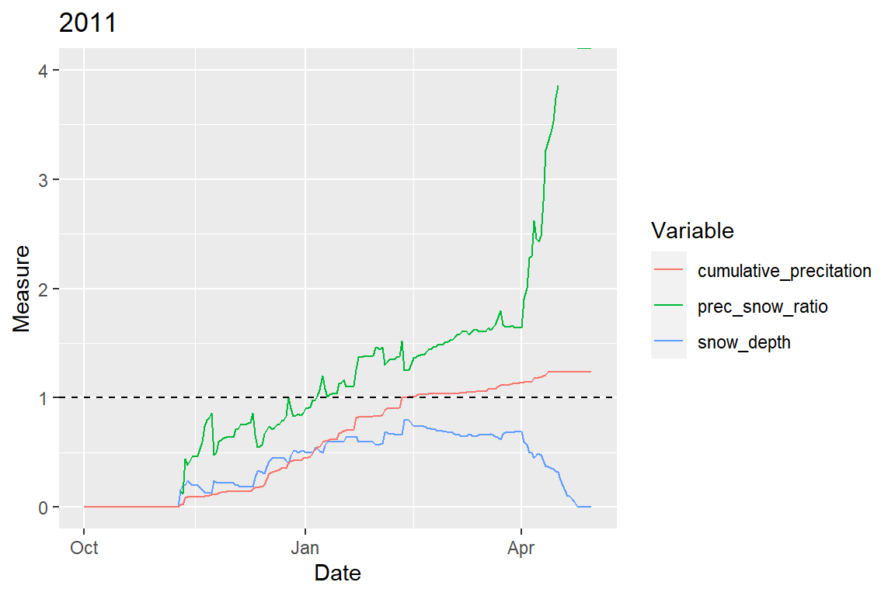

winter_mittadalen.RmdHere we explore the winter conditions in different years for Mittådalen sameby using the package witch. The data are from Myskelåsen weather station (snow depth) and Dravagen weather station (precipitation and temperature). Let’s first plot the precipitation and snow depth in each year of data, to see how it looks like.
library(tidyverse) library(forcats) library(witch) data(weather_mittadalen) # plot ggplot(weather_mittadalen, aes(date)) + facet_wrap(.~year, scales = "free_x", ncol = 5)+ geom_line(aes(y = snow_depth, color = "Snow depth (mm)")) + geom_line(aes(y = prec, color = "Precipitation (mm)")) + labs(x = "Date", y = "", color = "Measure") + theme(legend.position = "bottom")
Maybe plotting cumulative precipitation and snow depth is better. To do so, we use the function analyse_weather() to calculate it and plot it. We also add events of ice crust formation of type 3. To put all plots in the same figure, we use the function ggarrange() from the ggpubr package. The blue lines represent ice crust formation events type 3, sensu Lundqvist et al. (2007).
library(ggpubr) # calculate winter parameters and plot weather_years <- weather_mittadalen %>% tidyr::nest(data = c(date, snow_depth, prec, temp_min, temp_max, temp_avg)) %>% dplyr::mutate( winter_conditions = purrr::map(data, ~ with(., analyze_weather(date, snow_depth, prec, temp_min, temp_max, temp_avg))), winter_plots = purrr::map2(winter_conditions, year, ~ plot_weather(.x, term = c("snow_de", "cum"), add_events = "events3", title = .y))) # combine plots ggpubr::ggarrange(plotlist = weather_years$winter_plots, nrow = 3, ncol = 5, common.legend = T)
To look at each winter closely, we plot, for each, cumulative precipitation (in m), snow depth (in m), the ratio between cumulative precipitation and snow depth, and the dates of ice crust events 3 and 4. The dashed vertical lines are the dates of events 3 (blue) and 4 (red). The horizontal line is the reference for when cumulative precipitation and snow depth are similar.
# plot weather_years <- weather_years %>% dplyr::mutate(winter_plots2 = purrr::map2(winter_conditions, year, ~ plot_weather(.x, term = c("snow_de", "cum", "prec_snow_ratio"), factor_mult = c(0.01, 0.01, 1), add_events = c("events3", "events4"), title = .y))) # for each year for(i in 1:nrow(weather_years)) { # plot print( weather_years$winter_plots2[[i]] + ylim(0, 4) ) }

Here we plot both the herders classification of the winters conditions (as “bad”, “medium”, or “good”) and the number of events 3 and 4 we have in each year, in the first half of the winter. The bars represent the herders’ classification of weather conditions and the vertical lines represent the years when the construction of the wind industrial park in Glötesvålen started and ended.
# read expert knowledge data from herders winter_herders <- read.csv(system.file("extdata/details_winters_mittadalen.csv", package = "witch"), stringsAsFactors = F) %>% dplyr::as_tibble() %>% dplyr::mutate_at(c("good_bad_winter", "snow", "construction"), as.factor) %>% dplyr::mutate_at(vars(contains("date")), lubridate::ymd, tz = "UTC") %>% dplyr::select(winter, weather = good_bad_winter, construction) %>% dplyr::mutate(weather = forcats::fct_relevel(weather, "good", after = Inf)) # calculate ice crust events weather_years <- weather_years %>% dplyr::mutate( n_days3 = purrr::map(winter_conditions, ~ n_days(., event = 3)), n_days4 = purrr::map(winter_conditions, ~ n_days(., event = 4)), n_events3 = purrr::map(winter_conditions, ~ n_events(., event = 3)), n_events4 = purrr::map(winter_conditions, ~ n_events(., event = 4)), duration3 = purrr::map(winter_conditions, ~ duration_event(., event = 3)), duration4 = purrr::map(winter_conditions, ~ duration_event(., event = 4)) ) %>% tidyr::unnest(n_days3:n_events4) # plot ice events and herders' classification weather_years %>% dplyr::select(year, n_events3:n_events4) %>% tidyr::pivot_longer(cols = n_events3:n_events4, names_to = "what", values_to = "val") %>% ggplot(aes(x = year, y = val, color = what)) + geom_bar(aes(winter, as.numeric(weather)), data = winter_herders, inherit.aes = F, fill = "grey60", stat = "identity") + geom_vline(xintercept = first(winter_herders$winter[winter_herders$construction == "during"] - 0.5), linetype = 2, size = 1.1) + geom_vline(xintercept = first(winter_herders$winter[winter_herders$construction == "after"] - 0.5), linetype = 2, size = 1.1) + scale_y_continuous(name = "Weather conditions", breaks = 1:4, labels = levels(winter_herders$weather), sec.axis = dup_axis(name = "Number of events", labels = 1:4)) + geom_line(size = 1.5) + labs(colour = "")
In a first look, there does not seem to be a clear relationship between the number of ice crust events in the first half of the winter and “how bad it was” according to the herders. We can also visualize that in a table.
winter_herders %>% dplyr::left_join( weather_years %>% dplyr::select(year, n_events3:n_events4), by = c("winter" = "year") ) %>% knitr::kable()
| winter | weather | construction | n_events3 | n_events4 |
|---|---|---|---|---|
| 2008 | medium | before | 0 | 0 |
| 2009 | NA | before | 0 | 0 |
| 2010 | good | before | 2 | 0 |
| 2011 | good | before | 0 | 0 |
| 2012 | medium | during | 1 | 0 |
| 2013 | medium | during | 1 | 0 |
| 2014 | bad | during | 2 | 1 |
| 2015 | bad | after | 0 | 0 |
| 2016 | bad | after | 2 | 0 |
| 2017 | bad | after | 2 | 1 |
| 2018 | bad/medium | after | 0 | 0 |
| 2019 | medium | after | 1 | 0 |
| 2020 | bad | after | 0 | 1 |
# winter_herders %>%
# dplyr::left_join(
# weather_years %>%
# dplyr::select(year, n_events3:n_events4),
# by = c("winter" = "year")
# ) %>%
# dplyr::group_by(weather) %>%
# summarize(mean3 = mean(n_events3),
# mean4 = mean(n_events4))